Mânerul pompei:
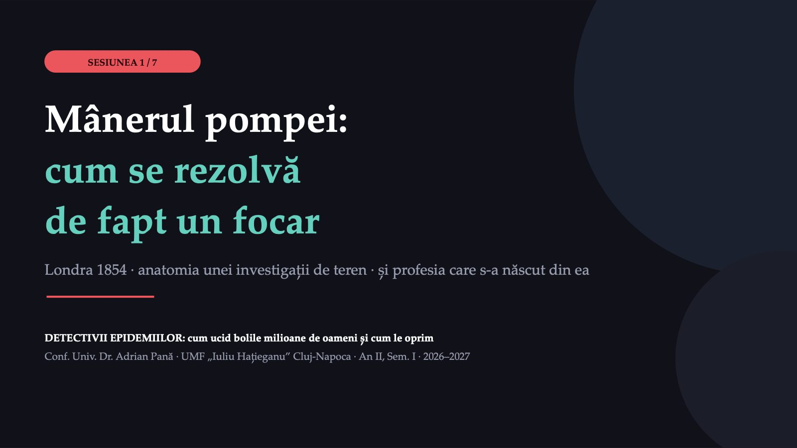
1 / 50Este falsă.
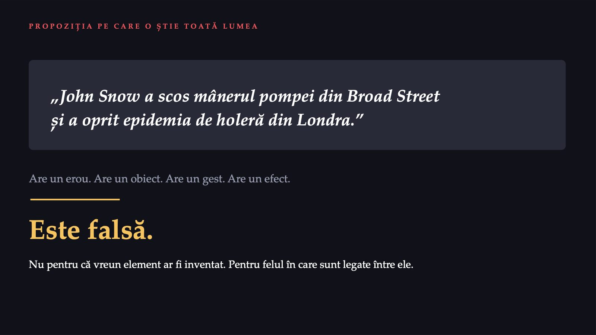
2 / 50Patru întrebări. Le reluăm la final.
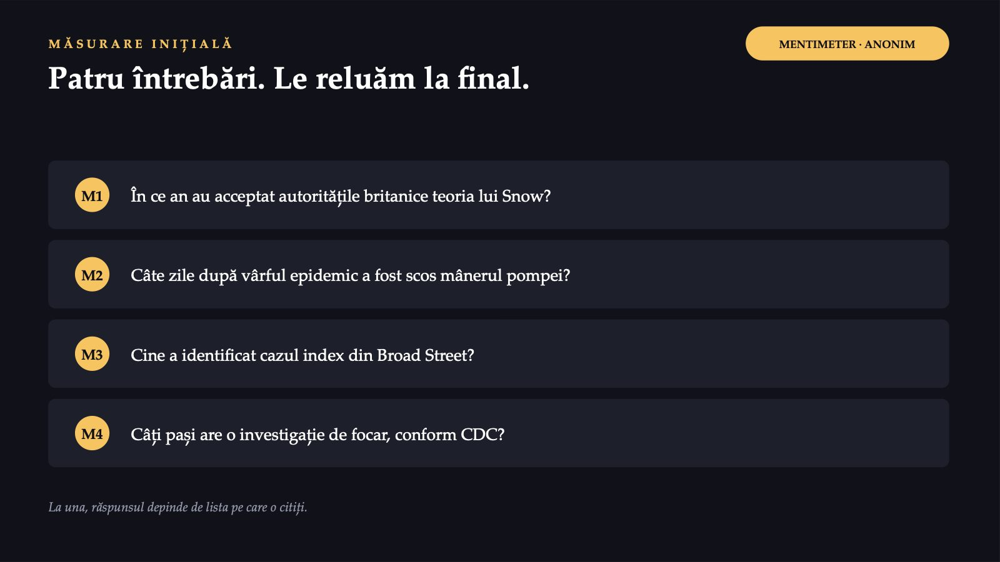
3 / 50143
![„NO. OF FATAL ATTACKS” PE ZI, BROAD STREET, 1854 143 12 1 septembrie — vârful 8 septembrie — ziua intervenției Citiți capul de coloană: atacuri FATALE, nu atacuri. Snow a numărat morții, nu bolnavii: o curbă a îmbolnăvirilor încheiate cu decesul, după ziua atacului. Și încă ceva, mai important: 143 și 12 sunt NUMĂRĂTORI FĂRĂ NUMITOR. Nu sunt incidențe. Populația Soho se golea în exact zilele în care numărul scade — prin fugă și prin deces. Sursa: Snow J. On the Mode of Communication of Cholera, ed. 2. Londra: Churchill, 1855, tabel p. 49, cap de coloană „No. of Fatal Attacks”. 12/143 = 8,4% — calcul propriu.](diapozitive/C01/004.jpg) 4 / 50
4 / 50Capul de coloană spune „No. of Fatal Attacks”: atacuri fatale, nu atacuri. 143 și 12 sunt numărători fără numitor.
Ce ține minte lumea vs. ce a decis de fapt cazul
![TEZA ACESTEI SESIUNI Ce ține minte lumea vs. ce a decis de fapt cazul Ce ține minte lumea Ce a decis cazul Actul mânerul, 8 septembrie 12 atacuri fatale în acea zi — dar populația fugea Instrumentul harta cu bare negre 315 vs. 37 la 10 000 de case Autorul Snow, geniul singuratic Whitehead a găsit cazul index Rezultatul „Snow a convins Londra” „we see no reason to adopt this belief” Sursa „scrie în manual” ce scrie efectiv documentul — verificăm după pauză O promisiune de demonstrat, nu o concluzie. O reluăm, cu o coloană goală, la final.](diapozitive/C01/005.jpg) 5 / 50
5 / 50Harta celor două ore
![PARCURSUL Harta celor două ore 0–10' Deschiderea propoziția pe care o știe toată lumea, Mentimeter — și cifra care o desface 10–24' Dosarul 1854 contextul, curba, contra-argumentul care se citează rar 24–36' Trei controale naturale casa de muncă, berăria, fabrica de capse 36–48' Numitorul cvasiexperimentul pe cel puțin 300 000 de oameni 48–58' Cazul index și verdictul preotul, bebelușul, și „nu vedem niciun motiv” 58–62' PAUZĂ 62–80' Dosarul Broad Street exercițiu în echipe, patru plicuri 80–92' Meseria, azi cele 10 etape, focarele din Cluj 92–100' Sinteză și Kahoot teza reluată, cinci reguli, 10 itemi](diapozitive/C01/006.jpg) 6 / 50
6 / 5001
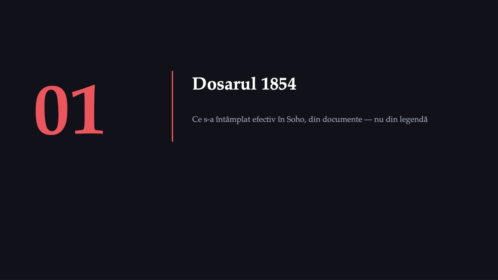
7 / 502 362 236
![CONTEXTUL Londra, august 1854 2 362 236 locuitori în Londra, la recensământul din 1851 36 406 locuitori în parohia St James, pe 164 de acri 14 139 locuitori în subdistrictul Golden Square, pe 54 de acri Haznale numeroase, multe defectuoase; fântâni publice puțin adânci, cu pereți de cărămidă fără mortar. O parte a orașului bea apă captată de companii din Tamisa, în care se descărcau canalele. Teoria dominantă: miasma. Bolile epidemice se transmit prin aer viciat. Vom vedea mai târziu de ce era, pentru un om rațional din 1854, o teorie bine susținută. Surse: Londra: Snow 1855, Tabelul XI, p. 88 (recensământul din 1851). Parohia St James: Cholera Inquiry Committee 1855, p. 9, 57–58 și 70–71. Companiile de apă: Snow 1855, p. 65–69.](diapozitive/C01/008.jpg) 8 / 50
8 / 50Atacuri fatale pe zi, tabelate de Snow
 9 / 50
9 / 50Fraza pe care relatările o taie la jumătate
![CE NU E ÎN LEGENDĂ · 01 Fraza pe care relatările o taie la jumătate „There is no doubt that the mortality was much diminished, as I said before, by the flight of the population, which commenced soon after the outbreak; but the attacks had so far diminished before the use of the water was stopped, that it is impossible to decide whether the well still contained the cholera poison in an active state…” Snow numește el însuși numitorul care dispărea. Versiunea trunchiată dă un argument mai spectaculos și mai slab. Nu una, ci patru explicații compatibile cu datele: Fuga populației Snow, p. 51 Epuizarea expușilor Whitehead, p. 162 (sugestie) Sursa se curăță Snow, p. 51; Whitehead, p. 162 Regresie la medie statistică Surse: Snow 1855, pp. 51–52 (citat integral). Whitehead, în Cholera Inquiry Committee 1855, p. 162: „the drinkers of the pump water were not so numerous when so many who habitually used it were already dead” — „plausible suggestions”, pe care nu le consideră concludente. McLeod KS. Soc Sci Med. 2000;50(7–8):923–935.](diapozitive/C01/010.jpg) 10 / 50
10 / 50Care jumătate a frazei se citează de obicei? Ce pierde versiunea scurtă?
Mânerul a fost, probabil, decizia corectă
![PARTEA CARE SE CITEAZĂ RAR Mânerul a fost, probabil, decizia corectă Whitehead, 1867: scoaterea mânerului a avut probabil „everything to do with preventing a new outbreak” — adică un nou focar. Ancora documentară: tatăl copilului de la nr. 40 a fost atacat chiar în ziua blocării pompei. „the father was not attacked till the day the pump was locked up” Sursa: Cholera Inquiry Committee 1855, p. 161 Sursa putea fi încă activă în gospodăria de origine pe 8 septembrie. Poziția defensabilă: mânerul nu a oprit primul val, dar a fost probabil decizia corectă. Cost aproape zero, beneficiu potențial mare, incertitudine ireductibilă. Cursul acesta NU vă învață să așteptați numitorul. Vă învață să nu confundați acțiunea cu dovada. Contra-imaginea vine spre final: Guineea, 2013–2014, aproape trei luni între primul caz și anunțul public al OMS. Surse: Cholera Inquiry Committee 1855, p. 161; Whitehead H. The Broad Street Pump. Macmillan’s Magazine. 1865;13:113–122, p. 122. Prezentarea din 1867: după reproducerea de pe situl John Snow al UCLA (sursă secundară).](diapozitive/C01/011.jpg) 11 / 50
11 / 50Veți face acest gest de zeci de ori
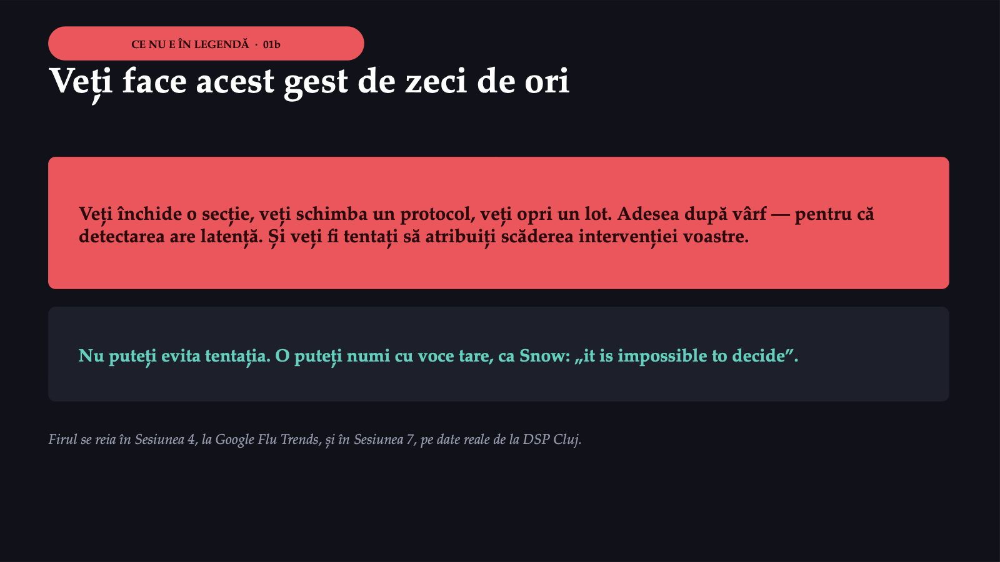
12 / 50616
![DOUĂ NUMĂRĂTORI, ACELAȘI FOCAR De ce numărul de cazuri nu este un fapt natural 616 decese tabelate de Snow, 19 august – 30 septembrie 1854 Sursa: Snow 1855, tabel p. 49 484 decese înregistrate de comitetul parohial în 17 săptămâni, până la 4 noiembrie Sursa: Cholera Inquiry Committee 1855, p. 15 ≥ 700 atacuri fatale, estimarea comitetului; mortalitatea lui: 220 la 10 000, față de 152 după datele stării civile ATENȚIE: niciuna nu se reface din 36 406 de locuitori (484 → 133; 700 → 192). Numitorul implicit, circa 31 800, nu a fost identificat în raport. Nu este o eroare a niciuneia: definiții și perioade diferite dau numere diferite, și amândouă pot fi corecte. Snow a fost cooptat ulterior în comitet. Surse: Snow 1855, tabel p. 49; Cholera Inquiry Committee 1855, p. 9 și 15. 133, 192 și 31 800: calcul propriu. Lecția practică: o rată publicată al cărei numitor nu e declarat NU este verificabilă, oricât de oficială ar fi sursa.](diapozitive/C01/013.jpg) 13 / 50
13 / 50Nu a desenat mai întâi o hartă. A bătut la uși.
![METODA Nu a desenat mai întâi o hartă. A bătut la uși. Pentru fiecare deces, o singură întrebare: de unde bea apă persoana decedată? 61 decese la persoane despre care a AFLAT că beau de la pompa din Broad Street 6 decese la persoane despre care a aflat că NU beau de acolo 6 decese pentru care nu a obținut informația 10 decese în case net mai apropiate de o ALTĂ pompă: 5 familii trimiteau totuși la Broad Street, 3 copii mergeau la școală lângă pompă 83 decese din ultimele trei zile ale săptămânii încheiate la 2 septembrie, anchetate una câte una NU este un studiu caz-control: nu există niciun grup de comparație, sunt exclusiv decedați. Este o SERIE DE CAZURI cu verificarea individuală a expunerii. Din aceste cifre nu se poate calcula niciun raport al cotelor. Sursa: Snow J. On the Mode of Communication of Cholera, ed. 2, 1855, pp. 39–40.](diapozitive/C01/014.jpg) 14 / 50
14 / 5002
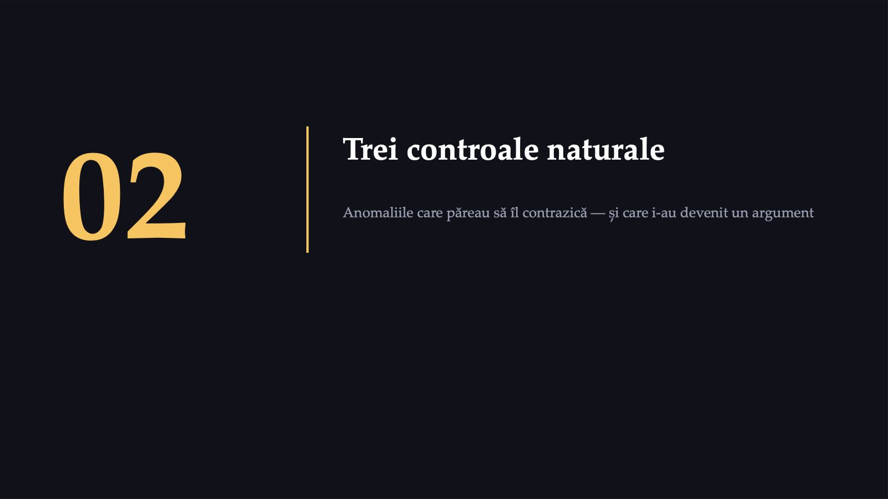
15 / 50535
![CONTROLUL 1 Casa de muncă (workhouse) din Poland Street 535 internați, într-o clădire înconjurată pe mai mult de trei sferturi de case cu decese 5 decese. Snow scrie că erau de așteptat „upwards of one hundred”. Casa de muncă avea fântână proprie în incintă și era racordată la compania Grand Junction. Internații nu trimiteau niciodată după apă la Broad Street. Aceleași străzi. Dacă miasma străzilor era cauza, de ce doar 5 decese? Replica miasmatică: o instituție bine administrată are alt aer (vezi Bethlem). Diferență reziduală de declarat: este o populație instituționalizată — vârstă, dietă și mobilitate diferite de ale populației generale. Surse: Snow J. On the Mode of Communication of Cholera, ed. 2, 1855, p. 42; General Board of Health 1855, p. 39 (Bethlem). „Workhouse” = casă de muncă, nu azil.](diapozitive/C01/016.jpg) 16 / 50
16 / 500
![CONTROALELE 2 ȘI 3 Berăria și fabrica de capse percutante BERĂRIA 0 decese în registre și nicio formă SEVERĂ, după proprietar, din peste 70 de muncitori: „none of them had suffered from cholera, — at least in a severe form, — only two having been indisposed”. FABRICA, NR. 37 18 decese, din ~200 de lucrători. Ținea DOUĂ BUTOAIE cu apă adusă de la pompa din Broad Street. Al treilea nu este un control negativ. Este o COHORTĂ EXPUSĂ, organizată, în interiorul aceleiași zone. Un epidemiolog bun nu caută confirmări. Caută excepțiile aparente. Diferență reziduală de declarat la berărie: efectul lucrătorului sănătos. Berăria angaja bărbați adulți capabili de muncă fizică. Iar 70 de oameni nu susțin singuri nicio concluzie. Sursa: Snow J. On the Mode of Communication of Cholera, ed. 2, 1855, pp. 42–43.](diapozitive/C01/017.jpg) 17 / 50
17 / 50Cine părea expus și NU s-a îmbolnăvit?
![CE NU E ÎN LEGENDĂ · 02 Cine părea expus și NU s-a îmbolnăvit? Locul Expunerea la apa Broad Street Pop. Rezultat Cum a fost stabilit rezultatul Casa de muncă Poland St. absentă — fântână proprie + Grand Junction 535 5 decese; Snow nu spune de unde are cifra Berăria absentă — bere de malț + fântână adâncă > 70 0 decese: registre; forme severe: proprietarul Fabrica de capse, nr. 37 prezentă — două butoaie ~200 18 decese la domiciliu Ultima coloană ÎNAINTEA cifrelor: la berărie, absența deceselor vine din registre; a formelor severe, numai de la proprietar. Definiția pe care o luați cu voi NU este „un grup identic în toate privințele”. Este: un grup de comparație natural, plauzibil neexpus, cu diferențe reziduale cunoscute și DECLARATE. Comparabilitatea grupurilor este o ipoteză pe care o susțineți, nu o constatare pe care o observați. Sursa: Snow 1855, pp. 42–43. În Escape Room-ul din Sesiunea 2, grupul expus care nu s-a îmbolnăvit nu este o eroare din dosar — este cheia.](diapozitive/C01/018.jpg) 18 / 50
18 / 5003
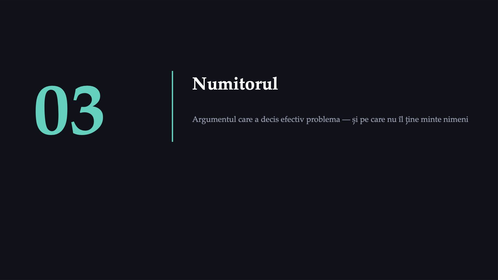
19 / 50Două companii, aceleași străzi
![SUDUL LONDREI, 1852–1854 Două companii, aceleași străzi SOUTHWARK & VAUXHALL Capta apă din Tamisa la Battersea, în zona în care se descărcau canalele orașului. LAMBETH În 1852 își mută priza la Thames Ditton, în amonte, deasupra zonei de descărcare a canalelor. „divided into two groups without their choice, and, in most cases, without their knowledge” Cel puțin 300 000 de oameni, împărțiți fără să fi ales și, în cele mai multe cazuri, fără să știe. Repartizarea depindea de istoria concurenței dintre companii, nu de venit, altitudine sau ocupație. NU este randomizare — nimeni nu a randomizat nimic și nu există nicio garanție de echilibru între grupuri. Este un CVASIEXPERIMENT cu alocare plauzibil independentă de risc: cel mai bun lucru pe care îl obții fără să randomizezi. Sursa: Snow J. On the Mode of Communication of Cholera, ed. 2, 1855, p. 61, 68 și 75.](diapozitive/C01/020.jpg) 20 / 50
20 / 50Nu ghicești expunerea. O măsori.
![PROBLEMA PRACTICĂ Locatarii rareori știau ce companie îi alimenta Snow a rezolvat-o cu un test chimic: apa Lambeth, captată la Thames Ditton, avea circa 0,95 grani de sare pe galon; apa Southwark & Vauxhall, circa 37,9 grani. Cu azotat de argint, diferența se vedea imediat. Sarea nu venea numai din canalizare, cum crezuse Snow la început: apa de mare urca până la Battersea. Testul rămânea valid. Când locatarul nu știa, Snow lua apă într-o fiolă, scria adresa pe dop și o examina acasă. Aspectul apei și ora livrării serveau doar drept confirmare. Nu ghicești expunerea. O măsori. Sursa: Snow J. On the Mode of Communication of Cholera, ed. 2, 1855, pp. 77–78 și 95–97.](diapozitive/C01/021.jpg) 21 / 50
21 / 50Decese la 10 000 de case
![TABELUL IX · PRIMELE ȘAPTE SĂPTĂMÂNI, PÂNĂ LA 26 AUGUST 1854 Decese la 10 000 de case 40 046 case S&V · 1 263 decese 26 107 case Lambeth · 98 decese 256 423 case restul Londrei · 1 422 decese Refaceți al treilea rând: 1 422/256 423 → 55,5, nu 59. Snow formulează prudent: „between eight and nine times”. Rândurile 1 și 2 se reproduc (315,4 și 37,5, trunchiate de Snow la 315 și 37); al treilea nu. Inconsecvență din sursă, reprodusă deliberat. Sursa: Snow J. On the Mode of Communication of Cholera, ed. 2, 1855, Tabelul IX, p. 86. Numitor: raport parlamentar 1853; decese: registrele GRO 1854. Când o cifră publicată nu se reface din propriile ei componente, o semnalați — nu o rescrieți în tăcere.](diapozitive/C01/022.jpg) 22 / 50
22 / 508,40
![CALCUL PROPRIU — NU AFIRMAȚIA LUI SNOW Riscul relativ, cu interval de încredere 8,40 IÎ 95%: 6,84–10,32 Diferență de rată: 278 la 10 000 de case (IÎ 95%: 259–297) 13,3 IÎ 95%: 7,8–22,8 — primele patru săptămâni (286 față de 14 atacuri fatale) Snow spune „de paisprezece ori” Următoarele șapte săptămâni, până la 14 octombrie (Tabelul X, datele Registrar General): 2 353 față de 302 decese; Snow: „nearly five times”. Snow tipărește 537 la 10 000 de case; din cifre rezultă 587,6. RR: 5,08 (IÎ 95%: 4,51–5,73). Pentru 795 de decese, registratorii nu au stabilit sursa de apă. TREI LIMITE DE DECLARAT. (1) Numitorul este CASA, nu persoana: decesele se grupează, deci intervalul e mai îngust decât incertitudinea reală — o limită inferioară. (2) Numitorul e din 1853, decesele din 1854. (3) În unele subdistricte, sursa de apă din ultimele trei săptămâni a fost calculată proporțional, nu anchetată: o parte din cele 1 263 de decese este o estimare. Surse: Snow 1855, p. 80, 83 și Tabelele VIII–X, pp. 84–88. RR și IÎ: calcul propriu, pe scara logaritmică; calculul complet este în registrul surselor. Sursele din secolul al XIX-lea nu raportează intervale de încredere.](diapozitive/C01/023.jpg) 23 / 50
23 / 50De ce tabelul, și nu harta
![TREI MOTIVE De ce tabelul, și nu harta 1 Are numitor Harta arată unde au murit oamenii. Nu arată câți locuiau acolo. Fără numitor, un numărător este o anecdotă bine desenată. 2 Are un grup de comparație pe care nu l-ai ales tu Nimeni nu a decis ce familie primește ce apă în funcție de vreo caracteristică asociată cu riscul. Alocarea era plauzibil independentă de risc — nu randomizată. 3 Are dimensiune Cel puțin 300 000 de oameni, față de 616 atacuri fatale pe câteva străzi, în Broad Street. Relatarea obișnuită reține gestul: „a scos mânerul pompei”. Gestul memorabil a înghițit dovada.](diapozitive/C01/024.jpg) 24 / 50
24 / 50Numărătorul singur nu este o dovadă
![CE NU E ÎN LEGENDĂ · 03 Numărătorul singur nu este o dovadă A doua oară în această sesiune — prima a fost la cifra de deschidere a sesiunii, 143 față de 12. O veți întâlni de cel puțin patru ori în curs: S2 Veți calcula rate de atac și veți descoperi că grupul cu cele mai multe cazuri nu este întotdeauna grupul cu cel mai mare risc. S4 Datele de mobilitate au numărători uriași și numitori greu de definit. S5 Datele EARS-Net despre rezistență: „procent din ce izolate?” este întrebarea decisivă. S7 Setul de date DSP vă va da notificări, nu incidențe. Diferența decide dacă vedeți un focar sau doar variație. Regula numărul unu din acest curs: cereți numitorul.](diapozitive/C01/025.jpg) 25 / 50
25 / 5004
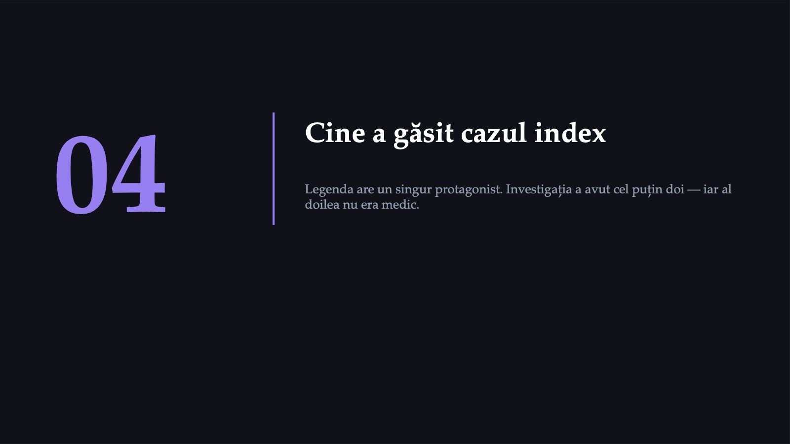
26 / 50Preotul care nu îl credea pe Snow
![REVERENDUL HENRY WHITEHEAD Preotul care nu îl credea pe Snow Preot ajutor (curate) la biserica St Luke din Berwick Street, în mijlocul zonei afectate, și membru al comitetului de anchetă al parohiei. Nu credea în teoria lui Snow: i-a spus unui prieten medic că o anchetă atentă o va INFIRMA. Studiind registrele de decese pentru un alt scop, a găsit la pagina 340 o înregistrare pe care nu o cercetase încă. Avea un avantaj pe care Snow nu îl avea: îndatoririle îl purtau aproape zilnic pe stradă, iar în timpul focarului vizitase foarte multe dintre familiile lovite. Surse: Cholera Inquiry Committee 1855, p. vii, 132, 138–139 și 159; Whitehead 1865, p. 116. Chave SPW. Med Hist. 1958;2(2):92–108.](diapozitive/C01/027.jpg) 27 / 50
27 / 50Broad Street nr. 40
![ÎNREGISTRAREA DE LA PAGINA 340 Broad Street nr. 40 „At 40, Broad Street, 2nd September, a daughter, aged five months, exhaustion, after an attack of Diarrhoea four days previous to death.” Cauza trecută în registru: epuizare, după diaree. Lista cerută de Snow cuprindea decesele prin holeră. 28 august Whitehead află de la mamă că boala începuse luni, 28 august, cu 78 de ore înaintea declanșării focarului general. Scutecele Mama le înmuia în găleți, iar apa o vărsa în parte într-o chiuvetă din curtea din spate și în parte în haznaua din fața casei. Casa era chiar în fața pompei. Excavarea York, secretarul comitetului, găsește zidăria drenului „into the condition of a sieve”: o infiltrare continuă („constant percolation”) ducea lichid din dren în fântână, aflată la doar 2 picioare și 8 țoli (circa 0,8 m). Surse: Cholera Inquiry Committee 1855, p. 159; raportul lui York, p. 171–174. „Comunicare directă dren–fântână” nu apare la York: el descrie infiltrare prin zidărie. „Trei picioare” este adâncimea săpăturii, nu distanța.](diapozitive/C01/028.jpg) 28 / 50
28 / 50Trei oameni, trei metode, un singur răspuns
![CE NU E ÎN LEGENDĂ · 04 Trei oameni, trei metode, un singur răspuns SNOW asocierea statistică anchetă din ușă în ușă, test chimic, tabelul cu numitori WHITEHEAD sursa acces la oameni; a găsit cazul index și traseul scutecelor YORK defectul fizic a deschis haznaua, drenul și fântâna și a documentat infiltrarea continuă Investigația de focar este o operație colectivă, în care rolul decisiv poate reveni celui care are acces la oameni, nu celui care are teoria. Și o clipă pentru mama de la nr. 40: copilul ei murise, iar raportul public al comitetului descria în detaliu ce făcuse ea cu scutecele. „Cazul index” este o categorie epidemiologică; pentru ea nu era o categorie. Comitetul nu s-a angajat, de altfel, la concluzia că focarul s-a datorat acestui caz.](diapozitive/C01/029.jpg) 29 / 50
29 / 5005
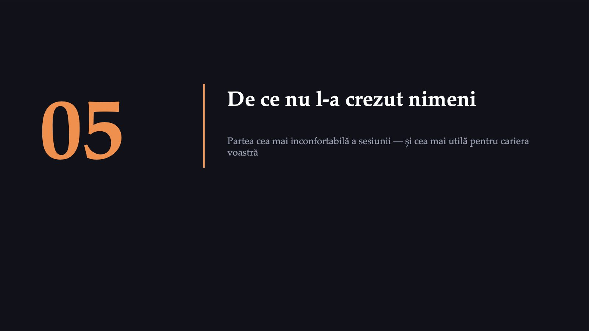
30 / 50Verdictul oficial
![GENERAL BOARD OF HEALTH · 1855 Verdictul oficial „…it has been suggested by Dr. Snow, that the real cause… lay in the general use of one particular well, situate at Broad Street… After careful inquiry, we see no reason to adopt this belief.” „După o anchetă atentă, nu vedem niciun motiv să adoptăm această convingere.” Snow a murit în 1858, la 45 de ani. Lucrarea lui nu fusese acceptată. Sursa: Report of the Committee for Scientific Inquiries in relation to the Cholera-Epidemic of 1854. Londra: General Board of Health, 1855, p. 52.](diapozitive/C01/031.jpg) 31 / 50
31 / 50Ce aveau, de fapt, în mână
![ESTE UȘOR ȘI INUTIL SĂ RÂDEM DE EI Ce aveau, de fapt, în mână Teorie multifactorială Comitetul admitea că infecția se poate înmulți și în aer, și în apă, într-o „rivalry of foulness”; distribuția holerei ținea, după el, mai puțin de apă decât de aer. Regularitate empirică — CU NUMITOR Relația găsită de Farr: mortalitatea scădea, cu multe excepții, pe măsură ce creștea altitudinea districtului. Farr AVEA populații la risc pe fiecare treaptă. Reală, replicabilă, cuantificată — și, după Snow, confundată de sursa apei. Rezultat de laborator negativ Hassall, în raportul General Board of Health: în cele două probe din Broad Street, niciun „peculiar body or production … calculated to excite suspicion”. Snow citează un examen Hassall DIFERIT, la p. 52 a propriei lucrări. Ghinion istoric Pacini a DESCRIS vibrionul în 1854; numele Vibrio cholerae Pacini 1854 a fost conservat oficial abia în 1965. Koch l-a identificat din nou în 1883 și l-a izolat în cultură pură; biografia Nobel: în Egipt a descoperit vibrionul și a adus culturi pure în Germania; a studiat holera și în India. Un rezultat de laborator negativ a fost citit ca dovadă a absenței. Rețineți cuvintele — revenim la ele peste douăzeci de minute. Surse: General Board of Health 1855, p. 48, 52 (verdictul) și 241 (Hassall). Snow 1855, p. 52: „a great number of very minute oval animalcules”, considerate „of no importance”. Lippi D, Gotuzzo E. Clin Microbiol Infect. 2014;20(3):191–195. Opinia 31 (1965). NobelPrize.org, biografia lui Koch.](diapozitive/C01/032.jpg) 32 / 50
32 / 50Farr avea numitor. Și greșea.
![CEL MAI IMPORTANT SLIDE AL SESIUNII Farr avea numitor. Și greșea. „The law of elevation, however, established by Dr. Farr” (Thomson, anexa VII) — mortalitatea prin holeră scădea, cu multe excepții, odată cu altitudinea locuinței. Farr avea populații la risc pe fiecare treaptă, cuantificare și replicabilitate. Relație reală, replicabilă, cuantificată. Și, după Snow, produsă de un factor de confuzie: districtele joase primeau apa cea mai contaminată. Deci teza sesiunii NU poate fi „construiește numitorul și vei avea dreptate”. Numitorul e necesar și nu e suficient. Ce a decis cazul a fost un GRUP DE COMPARAȚIE în care alocarea nu depindea de nimic altceva relevant. Farr avea rate; Snow avea rate PLUS alocare neconfundată. O corelație puternică, reproductibilă și cuantificată poate fi reală și totuși necauzală, produsă în întregime de un factor de confuzie. Surse: General Board of Health 1855, p. 15 și 48–49 (gradientul, în raportul comitetului) și Anexa nr. VII — R. D. Thomson, Report on the Chemical Composition of Metropolitan Waters during the year 1854, p. 185 (formularea „law of elevation”); NU la p. 52, alături de verdict. Snow 1855, pp. 97–98. Eyler JM. Soz Praventivmed. 2001;46(4):225–232.](diapozitive/C01/033.jpg) 33 / 50
33 / 50Dovada și decizia sunt două procese diferite
![CE NU E ÎN LEGENDĂ · 05 Dovada și decizia sunt două procese diferite Snow avea dreptate în 1854. Avea dovezi în 1855. A murit în 1858, înainte ca lucrarea lui să fie acceptată. Nu a fost suficient. Criterii diferite. Actori diferiți. Calendare diferite. Un epidemiolog care crede că o analiză bună produce automat o decizie bună va fi un epidemiolog frustrat și ineficace. Planificați pentru amândouă, de la început: pentru producerea dovezii ȘI pentru traseul ei prin sistemul care ia decizia. Firul se reia în Sesiunea 4 (invitatul din teren: cât timp trece între raport și măsură) și în Sesiunea 6 (de ce datele nu conving când contrazic o convingere instalată).](diapozitive/C01/034.jpg) 34 / 50
34 / 50Pauză
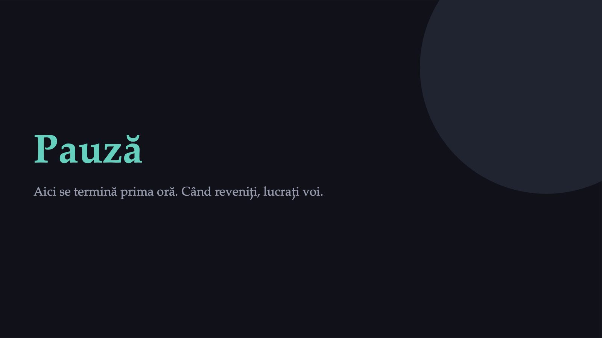
35 / 50Dosarul Broad Street
![ECHIPE · 18 MIN ECHIPE DE 3–4 Dosarul Broad Street Patru etape, pe rând, la semnal. Numitorul se lucrează pe foaia echipei. 1 4′ Harta Harta proiectată: decesele pe adrese și pompele publice. Notați pe foaie pompa suspectată și argumentul, într-o propoziție. 2 4′ Anomaliile Casa de muncă (535/5), berăria (>70/0 forme severe), fabrica (~200/18). Pentru fiecare: întărește sau slăbește ipoteza? De ce? 3 5′ Numitorul Întâi doar decesele: 1 263 vs. 98. Apoi casele: 40 046 vs. 26 107. Recalculați la 10 000. 4 5′ Verdictul Citatul din 1855. De ce au spus totuși nu? Și de ce anume ați fi avut nevoie ca să îi convingeți? Se evaluează raționamentul, nu soluția. Fișa echipei se colectează și se folosește la deschiderea Sesiunii 2.](diapozitive/C01/036.jpg) 36 / 50
36 / 5006
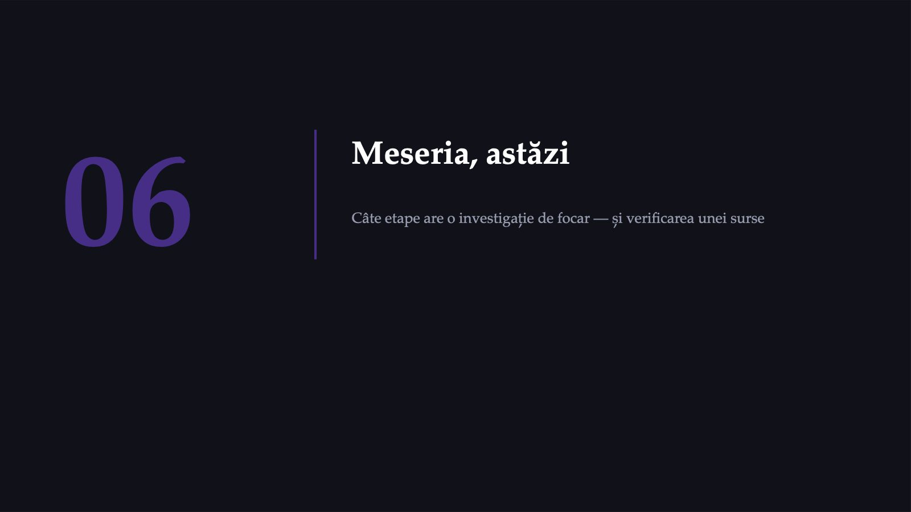
37 / 50417 pagini. Există. Și poate fi consultat.
![DOCUMENTUL PE CARE ÎL AVEȚI ÎN FAȚĂ 417 pagini. Există. Și poate fi consultat. Fișa disciplinei, Sesiunea 1: „Cele 10 etape ale investigației unui focar conform OMS/ECDC (Field Epidemiology Manual, 2023).” Prima pagină a PDF-ului, verbatim: „This content was created by a community of epidemiologists between 2010 and 2018 in a Wiki format. ECDC had a community support role in this activity and takes no responsibility for the accuracy or completeness of the content.” Cine l-a scris o comunitate de epidemiologi, în format wiki; pagini modificate între 2010 și 2021 Rolul ECDC „community support role” — nu autor Responsabilitatea ECDC și-o declină explicit pentru acuratețe și completitudine Nivel de evidență VII pe scara Melnyk & Fineout-Overholt — cel mai de jos Statutul retras de la adresa ECDC (ultima captură funcțională: 11 octombrie 2022); reinstalat în 2023 la femwiki.org Sursa: FEM Wiki (găzduit de ECDC), export PDF, 417 p., p. 1; PDF creat la 29.11.2022, titlul din metadate „FEM Wiki home”. Exemplarul: în folderul cursului, pus la dispoziție de titular; conținutul wiki-ului: femwiki.org, reinstalare Transmissible (2023).](diapozitive/C01/038.jpg) 38 / 50
38 / 50Zece etape, zece capcane
![FEM WIKI · PAGINA 116 · ULTIMA MODIFICARE 6 OCTOMBRIE 2014 Zece etape, zece capcane 1 Determină existența unui focar Taking all reported clusters at face value 2 Confirmă diagnosticul Failing to obtain a laboratory diagnosis 3 Definește cazul Defining cases poorly 4 Caută cazurile Conducting a door-to-door case search or a survey upfront 5 Generează ipoteze din datele descriptive Merging the hypothesis generating and the hypothesis-testing stages 6 Testează ipotezele printr-un studiu analitic Believing that a questionnaire constitutes a study protocol 7 Formulează concluziile Having excessive confidence in the conclusions 8 Compară ipoteza cu faptele stabilite; studii suplimentare Rushing to conduct an environmental assessment 9 Comunică rezultatele Failing to communicate the results to decision-makers 10 Aplică măsurile de prevenire Formulating general recommendations that are not based upon findings Capcanele 3, 5 și 7 apar exact în sălile acestui curs — 3 și 5 în Sesiunea 2; 7 este exact ce NU a făcut Snow, când a scris „impossible to decide”.](diapozitive/C01/039.jpg) 39 / 50
39 / 50Lista de evaluare este cea de zece etape de pe acest diapozitiv, în ordinea lor logică. La evaluarea finală se cer cel puțin opt dintre ele, aplicate pe cazul simulat din quiz-ul final (fișa, criteriul 10.8).
Liste de 7, 10 sau 13 pași, ordonați diferit
![DE UNDE VINE CIFRA „10” Liste de 7, 10 sau 13 pași, ordonați diferit Pagina 34, verbatim: „Unfortunately, various groups have generated various lists where steps differ in sequence and number.” Referința (2): Gregg (ed.), Field Epidemiology, OUP, 1996 — în ediția a treia, poziția 2 din bibliografia obligatorie. Tot acolo: o listă pentru focarele alimentare are doar 7 pași. 1996 Gregg MB (ed.), Field Epidemiology, ed. 1, OUP 10 — lista „clasică” 2006 / rev. 2011 CDC, Principles of Epidemiology, ed. 3, Lecția 6 13 2012 adaptarea EPIET/EUPHEM pentru formare 10, restructurate 2014 FEM Wiki, „10 steps, 10 pitfalls” 10, cu capcane ulterior The CDC Field Epidemiology Manual — pentru CDC, a patra ediție a lui Gregg — Documentul-sursă avertizează el însuși: „The lists of steps for outbreak investigations must not be taken to literally.” Numărul diferă între liste; la evaluare se folosește lista de zece etape de pe diapozitivul anterior. Contează ordinea: dacă formulați ipoteza înaintea definiției de caz, veți găsi exact cazurile care v-o confirmă. Surse: FEM Wiki (găzduit de ECDC), export PDF, pp. 34–35, 116. CDC. Principles of Epidemiology, ed. 3, Lecția 6, Tabelul 6.2. Gregg MB (ed.), ed. a 3-a, OUP, 2008, ISBN 9780195313802.](diapozitive/C01/040.jpg) 40 / 50
40 / 50Ce a schimbat fiecare
![TREI FOCARE, TREI LECȚII Ce a schimbat fiecare E. COLI O157:H7 1992–1993 > 500 infecții confirmate de laborator · 4 decese · în Washington: 477 de cazuri, 144 spitalizări, 30 SHU, 3 decese, vârstă mediană 7,5 ani 1994: FSIS (USDA) declară „adulterată” carnea tocată crudă contaminată cu O157:H7, dacă nu este prelucrată ulterior pentru distrugerea bacteriei SARS 2002–2003 8 096 cazuri probabile · 774 decese · letalitate 9,6% · 1 706 lucrători sanitari (21%) · România: 1 caz importat ProMED-mail semnalează pe 10 februarie; OMS alertează pe 12 martie EBOLA 2013–2016 > 28 600 infectați · 11 325 decese · letalitate brută ~39,6% (calcul propriu; numărul infectaților este un prag inferior, deci cifra e orientativă) Debutul cazului index: 26 decembrie 2013 → anunțul public al OMS: 23 martie 2014. Aproape trei luni, în care examenul microscopic a întărit ipoteza greșită a holerei Amintiți-vă de mâner: probabil decizia corectă. Aici, contra-imaginea: nu amânați decizia până apare dovada. Surse: CDC. MMWR. 1993;42(14):258–263. · WHO. Summary of probable SARS cases, 1 nov 2002 – 31 iul 2003. · WHO. Ebola outbreak 2014–2016 West Africa; Origins of the 2014 Ebola epidemic (2015). · Baize S et al. N Engl J Med. 2014;371(15):1418–1425. Discrepanță verificată: OMS spune 18 luni, Baize și colaboratorii, 2 ani.](diapozitive/C01/041.jpg) 41 / 50
41 / 5067,5
![JACK-IN-THE-BOX · DOZA INFECTANTĂ Sub 700 de organisme 67,5 organisme pe burger — mediana, din 76 de probe Cultură cantitativă a cărnii tocate: mediana, 1,5 organisme pe gram. Rezultatul sugerează o doză infectantă sub 700 de organisme. OR PERECHE, California 13 (IÎ 95%: 1,7–99) — primele 25 de cazuri, martori din comunitate. Exclude nulul; borne în raport de ~58×. OR însoțitori de masă, Nevada 6,0 (IÎ 95%: 0,7–49,8) — martorii fuseseră și ei la restaurant: altă întrebare decât în California. Reflexul învățat prost spune: primul e „semnificativ statistic”, al doilea nu. Uitați-vă la LĂȚIMI: amândouă sunt imprecise. Iar studiile nu sunt comparabile: în California, martori din comunitate; în Nevada, însoțitori de masă. Este capcana 7, în formă modernă. CE A FUNCȚIONAT: MMWR din aprilie 1993 a tipărit, la p. 262, 155 °F echivalat greșit cu 86,1 °C. Erata, în MMWR din 14 ianuarie 1994, p. 18: corect, 68 °C. Sistemul și-a găsit greșeala și a publicat corecția, în același jurnal, în mai puțin de un an. Surse: CDC. MMWR. 1993;42(14):259–261 (rapoartele cotelor) · Tuttle J et al. Epidemiol Infect. 1999;122(2):185–192. DOI: 10.1017/s0950268898001976 · Bell BP et al. JAMA. 1994;272(17):1349–1353. Vârsta mediană în Washington: 7,5 ani (mediană, nu un caz individual).](diapozitive/C01/042.jpg) 42 / 50
42 / 50451 499
![HOLERA ASTĂZI · OMS, 2025–2026 Holera nu este o boală a trecutului 451 499 cazuri raportate OMS în 2025, din 47 de țări (560 823 în 2024, din 60) 7 870 decese în 2025, față de 6 028 în 2024: cazuri mai puține, decese mai multe 1,7% letalitate pe toate decesele raportate, față de 1,1% în 2024 Șapte țări, fiecare cu peste zece mii de cazuri, au însumat 89% dintre cazuri și 91% dintre decese; cinci erau clasificate de Banca Mondială drept afectate de conflict. Estimarea reluată de OMS, la nivel mondial: 1,3–4,0 milioane de cazuri și 21 000–143 000 de decese pe an. Anul în curs, 1 ianuarie–26 iulie 2026: 221 365 de cazuri de holeră și diaree acută apoasă și 2 153 de decese, din 28 de țări. Seria lunară și raportul anual sunt serii distincte: nu se adună. Surse: OMS. Cholera annual report, 2025. Wkly Epidemiol Rec. 2026;101(38):223–235. OMS. Multi-country outbreak of cholera, date la 26 iulie 2026. Wkly Epidemiol Rec. 2026;101(35):195–202. OMS, fișa despre holeră (estimarea Ali și colab., 2015). Consultate la 27.09.2026.](diapozitive/C01/043.jpg) 43 / 50
43 / 50Cum devii unul dintre ei
![ORIENTARE PROFESIONALĂ Cum devii unul dintre ei EIS · CDC · 1951 4 100+ formați din 1951; 4 175 în raportul pe 2025 40 ofițeri în promoția 2026, din 274 de candidați 300+ investigații pe an 97% absolvenți recenți în sănătatea publică EPIET · DIN 1995 doi ani durata ECDC Fellowship Programme 149 diplome EPIET, 1995–2008 90% lucrau în sănătatea publică aplicată 340 publicații din proiectele participanților, până în 2009 INSP–CNSCBT București: sit de formare recunoscut pentru EPIET, nu și pentru EUPHEM (lista ECDC, 6 februarie 2026); situl românesc EUPHEM este Institutul Cantacuzino. Pe EU-track, participanții (fellows) lucrează în afara țării lor; pe MS-track, în propria țară. Câți epidemiologi de teren are România? Nicio cifră oficială identificată — absența ei este un rezultat. TEPHINET, global: peste 40 328 de absolvenți FETP (contor nedatat, consultat la 27 septembrie 2026). Surse: CDC. About EIS (22.07.2026); EIS 2025 annual update; fișa EIS, august 2025. · ECDC. Fellowship Programme; lista siturilor (6.02.2026); pagina INSP (30.08.2018). · Bosman A et al. Euro Surveill. 2009;14(43):19381. · TEPHINET (27.09.2026). Cei 135 de ofițeri din fișa EIS (anul fiscal 2024) au sprijinit răspunsul local la urgențe; nu sunt efectivul programului.](diapozitive/C01/044.jpg) 44 / 50
44 / 5039
![ROMÂNIA · CNSCBT, RAPORT PENTRU ANUL 2024 (84 P., PUBLICAT 15 OCTOMBRIE 2025) O creștere documentată în raportul oficial 46 → 162 focare de hepatită virală A 333 → 1 374 cazuri în focare 815 → 2 590 cazuri raportate 2023 → 2024 SARCINA DE TRANSFER — 2 minute: în care dintre aceste trei județe este problema mai gravă? 39 Bihor 31 CLUJ 26 Sălaj populația ? Nu răspundeți încă. Scrieți mai întâi DE CE ANUME aveți nevoie ca să puteți răspunde. Populația județelor NU este pe acest slide, deliberat. Este Tabelul IX, cu nume românești: un clasament fără populație, tentant de citit ca verdict. Surse: INSP–CNSCBT. Raport pentru anul 2024, p. 23 și 25; Raport pentru anul 2023, p. 22 și 24. Definiția de focar din raport e specifică HVA. Restul anului 2024: 41 de focare de scarlatină · 45 de focare de tuse convulsivă (2 în 2023), 240 de cazuri în focare, 5 decese · leptospiroză: niciun focar · toxiinfecțiile alimentare, urmărite separat (definiția OMS: două sau mai multe persoane).](diapozitive/C01/045.jpg) 45 / 50
45 / 50Ce ar fi fost diferit astăzi
![1854 vs. 2026 Ce ar fi fost diferit astăzi Genomica Pentru Broad Street, 1854, nu a fost identificat niciun specimen păstrat și niciun genom. Ce există: un genom din a doua pandemie, reconstruit din intestinul conservat al unei victime din Philadelphia, 1849 — 203 variații de un nucleotid față de tulpina clasică O395. NCTC 30, izolată în 1916, nu aparține liniilor pandemice. Supravegherea apelor uzate Astăzi, apele uzate sunt ele însele un loc de supraveghere epidemiologică. În UE: Directiva 2024/3019, articolul 17; transpunere până la 31 iulie 2027. Metoda, sensibilitatea și limitele ei: ședința a patra. Ședința a cincea reia raționamentul pe genomuri actuale: SARS-CoV-2, în timp real, pe Nextstrain. Și totuși: presupuneți că Snow ar fi avut toate acestea în septembrie 1854. Ar fi convins General Board of Health? Păstrați răspunsul pentru Sesiunea 6. Surse: Devault AM et al. N Engl J Med. 2014;370(4):334–340. DOI: 10.1056/NEJMoa1308663 · Dorman MJ et al. Proc Biol Sci. 2019;286(1900):20182025. DOI: 10.1098/rspb.2018.2025 · Directiva (UE) 2024/3019, art. 17 și 33.](diapozitive/C01/046.jpg) 46 / 50
46 / 50Ce ține minte lumea vs. ce a decis de fapt cazul
![TEZA, ACUM DEMONSTRATĂ Ce ține minte lumea vs. ce a decis de fapt cazul Ce ține minte lumea Ce a decis cazul CE AM GĂSIT EU Actul mânerul, 8 septembrie 12 atacuri fatale, față de 143 la vârf — dar populația fugea Instrumentul harta cu bare negre 315 vs. 37 la 10 000 de case · RR 8,40 Autorul Snow, geniul singuratic Whitehead: fetița de cinci luni, nr. 40 Rezultatul „Snow a convins Londra” „we see no reason to adopt this belief” Sursa „scrie în manual” pagina relevantă, din 2014 Nu arta de a avea dreptate spectaculos. Arta de a construi GRUPUL DE COMPARAȚIE înainte ca cineva să te creadă — și de a lucra mai departe după ce nu te-a crezut.](diapozitive/C01/047.jpg) 47 / 50
47 / 50Ce luați cu voi
![CINCI REGULI Ce luați cu voi 1 Cereți numitorul — și apoi grupul de comparație. Numitorul e necesar și nu e suficient: Farr avea numitor și greșea. Ce decide este alocarea neconfundată. 2 Căutați excepția aparentă. Nu „cine s-a îmbolnăvit?”, ci „cine părea expus și NU s-a îmbolnăvit?” — cu condiția să declarați ce anume mai diferea între grupuri. 3 Acționați sub incertitudine, fără să confundați acțiunea cu dovada. Mânerul a fost probabil scos corect, deși atacurile scădeau deja. În Guineea au trecut aproape trei luni între debutul primului caz și alertarea OMS. 4 Spuneți „nu a fost identificat”, nu „nu există”. Ca la Hassall: un rezultat de laborator negativ a fost citit ca dovadă a absenței. 5 Nu puteți verifica tot. Verificați ce schimbă o decizie. Nu veți verifica paginația unui volum vechi. Veți putea întreba întotdeauna care e numitorul unei rate. Regula 5 nu se deduce din datele de mai sus. Se deduce din experiența pregătirii acestei sesiuni.](diapozitive/C01/048.jpg) 48 / 50
48 / 50Sursele acestei sesiuni
![VERIFICABIL Sursele acestei sesiuni Fiecare cifră are o afirmație în registrul public al surselor, cu pagina și data verificării. Toate corecturile de conținut aduse versiunilor întâi–a treia sunt în anexa notelor de curs. 1854 — surse primare, integral pe archive.org [1] Snow J. On the Mode of Communication of Cholera, ed. 2. Londra: Churchill, 1855. [2] Cholera Inquiry Committee. Report on the Cholera Outbreak in the Parish of St. James, Westminster. Londra, 1855. [3] General Board of Health. Report of the Committee for Scientific Inquiries… Londra, 1855. [4] McLeod KS. Soc Sci Med. 2000;50(7–8):923–935. DOI: 10.1016/s0277-9536(99)00345-7 [5] Brody H et al. Lancet. 2000;356(9223):64–68. DOI: 10.1016/S0140-6736(00)02442-9 [6] Paneth N et al. Am J Public Health. 1998;88(10):1545–1553. DOI: 10.2105/ajph.88.10.1545 [7] Vandenbroucke JP et al. Am J Epidemiol. 1991;133(10):967–973. DOI: 10.1093/oxfordjournals.aje.a115816 [8] Vinten-Johansen P et al. Cholera, Chloroform, and the Science of Medicine: A Life of John Snow. OUP, 2003. [9] Whitehead H. The Broad Street Pump. Macmillan’s Magazine, dec. 1865;13:113–122. [10] Cameron D, Jones IG. Int J Epidemiol. 1983;12(4):393–396. DOI: 10.1093/ije/12.4.393 [11] Eyler JM. Soz Praventivmed. 2001;46(4):225–232. DOI: 10.1007/BF01593177 [12] Chave SPW. Med Hist. 1958;2(2):92–108. DOI: 10.1017/s0025727300023504 [13] Ramsay MAE. Proc (Bayl Univ Med Cent). 2006;19(1):24–28. [14] Lippi D, Gotuzzo E. Clin Microbiol Infect. 2014;20(3):191–195. Modern — focare, formare, genomică [15] CDC. MMWR. 1993;42(14):258–263. [16] Bell BP et al. JAMA. 1994;272(17):1349–1353. DOI: 10.1001/jama.1994.03520170059036 [17] Tuttle J et al. Epidemiol Infect. 1999;122(2):185–192. DOI: 10.1017/s0950268898001976 [18] Baize S et al. N Engl J Med. 2014;371(15):1418–1425. DOI: 10.1056/NEJMoa1404505 [19] Devault AM et al. N Engl J Med. 2014;370(4):334–340. DOI: 10.1056/NEJMoa1308663 [20] Dorman MJ et al. Proc Biol Sci. 2019;286(1900):20182025. DOI: 10.1098/rspb.2018.2025 [21] CDC. Principles of Epidemiology, ed. 3, Lecția 6. Rev. 2011. [22] FEM Wiki (găzduit de ECDC), export PDF, 417 p., creat la 29.11.2022. [23] Gregg MB (ed.). Field Epidemiology, ed. 3. OUP, 2008. ISBN 9780195313802. [24] Gigerenzer G, Hoffrage U. Psychol Rev. 1995;102(4):684–704. DOI: 10.1037/0033-295X.102.4.684 [25] INSP–CNSCBT. Raport pentru anul 2024 (15 oct. 2025, 84 p.). [26] OMS. Wkly Epidemiol Rec. 2026;101(35) și 101(38): holera, 2025–2026. [27] OMS. Tabelul SARS (2003); Ebola 2014–2016; Origins of the 2014 Ebola epidemic (2015). [28] CDC. About EIS; EIS 2025 annual update. ECDC. Siturile de formare (6.02.2026). TEPHINET. [29] INS. TEMPO POP105A și SAN104A. Eurostat. hlth_rs_spec; hlth_rs_physcat. [30] Directiva (UE) 2024/3019 (apele uzate urbane), art. 17. Ce nu s-a putut verifica este listat în caseta „Ce nu putem afirma” din notele de curs. Constatările administrative privind fișa disciplinei sunt într-o notă separată, adresată titularului.](diapozitive/C01/049.jpg) 49 / 50
49 / 50Testăm ce a rămas
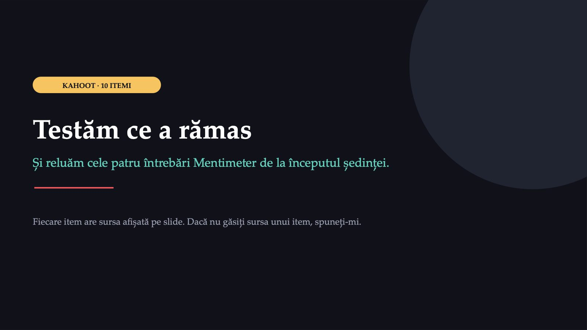
50 / 50Săgeți sau spațiu: navigare · O: vedere de ansamblu · N: notele prezentatorului · F: ecran complet · Esc: închidere